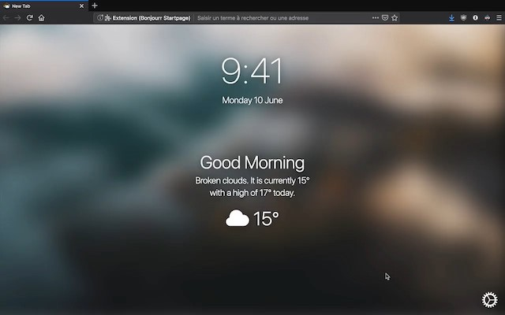

Bonjourr
Page d'accueil personnalisable pour navigateur inspirée par iOS



Page d'accueil personnalisable pour navigateur inspirée par iOS
Bonjourr est une nouvelle page d'accueil pour votre navigateur Internet, elle apparait lorsque vous ouvrez une nouvelle fenêtre ou un nouvel onglet. Nous nous sommes inspiré du design d'iOS, et plus précisément de l'interface qui s'affiche au réveil lorsque vous utilisez la fonction Bedtime.
Elle offre de nombreuses fonctionnalités telles que l'affichage de votre heure et météo locale, un accueil changeant selon l'heure de la journée et la possibilité d'utiliser vos moteurs de recherche favoris.
Bonjourr est personnalisable, vous pouvez par exemple changer son arrière plan, activer ou désactiver certains éléments, ajouter des Favoris ou encore profiter du mode sombre. Elle est faite pour sembler minimaliste, mais pourtant être belle et pratique pour parfaitement s'adapter à votre workflow et vous rendre plus productif et plus serein.
Bonjourr est disponible en anglais et en français.

Watch
Puisque Bonjourr est un projet open source réalisé durant notre temps libre, notre budget est limité. Malheureusement, Apple demande aux développeurs de payer s'ils souhaitent publier une extension pour Safari, ce que nous ne souhaitons pas encore faire. Vous pouvez tout de même utiliser Bonjourr dans Safari en suivant le guide ci-dessous.
Général, mettez la page d'accueil aux options Les nouvelles fenêtres ouvrent et Les nouveaux onglets ouvrent.
Page d'accueil. Par exemple, file:///Users/"pseudo"/Documents/Bonjourr/index.html si vous avez placé le dossier dans Documents. N'oubliez pas de changer "pseudo" dans le chemin par le nom d'utilisateur de votre profil.
https://online.bonjourr.fr/). Vous aurez les mises à jour automatiques, mais vous perdrez de la rapidité à l'affichage ainsi qu'un accès hors ligne.
La plupart de nos arrière-plans viennent d'Unsplash, une excellente plateforme de photographie stock. Nous utilisons également l'API d'Unsplash pour faire fonctionner l'option Arrière plan dynamique. Vous trouverez ci-dessous les liens vers les images originales.
Bonjourr synchronise vos préférences d'utilisateur avec votre compte Google ou Firefox. Nous ne collectons aucune de vos données. Bonjourr n'a besoin que d'une permission pour fonctionner, le stockage du navigateur. Vous pouvez choisir de configurer la météo selon votre géolocalisation.